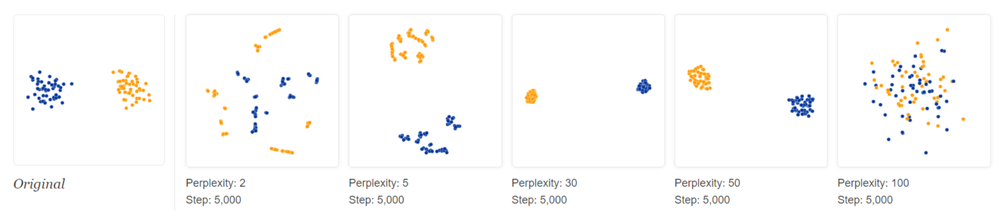

SNE and $t$-SNE¶
$t$-Distributed Stochastic Neighborhood Embedding [van der Maaten & Hinton 2008]. Read as “tisney”.
We first introduce its precursor SNE [Hinton & Roweis 2002].
SNE Objective¶
SNE is suitable when we
want visualization of static data set, i.e. $k=3$ or $k=3$.
don’t need an out-of-sample extension.
Most nonlinear methods try to maintain global similarity measures (inner product or distance) in the original space $\mathcal{X}$ and the low-dimensional projections $\mathcal{Y}$. It’s actually impossible to actually maintin distances/similarities when we squash to only 2-3 dimensions.
In contrast, SNE instead tries to maintain neighborhood properties: If $\boldsymbol{x}_i ,\boldsymbol{x}_j$ are likely to be neighbors in the original space, then their mappings in the low-dim space $\boldsymbol{z}_i , \boldsymbol{z}_j$ should also be neighbors.
Define the probability that point $\boldsymbol{x}_i$ would pick $\boldsymbol{x}_j$ as its neighbor as
$$ p_{j \mid i}=\left{\begin{array}{ll} \frac{\exp \left( \left(-|| \boldsymbol{x}{i}-\boldsymbol{x}{j} |^{2}\right) / 2 \sigma_{i}^{2} \right)}{\sum_{k \neq i} \exp \left( \left(-|| \boldsymbol{x}{i}-\boldsymbol{x}{k} |^{2}\right) / 2 \sigma_{i}^{2} \right)} & \text { if } i \neq j \ 0 & \text { if } i=j \end{array}\right. $$
where $\sigma_i$ is a data point-specific variance of Gaussian centered at $\boldsymbol{x}_i$, to be introduced later.
In the low-dimensional space, the probability is
$$ q_{j \mid i}=\left{\begin{array}{ll} \frac{\exp \left(-|| \boldsymbol{z}{i}-\boldsymbol{z}{j} |^{2}\right)}{\sum_{k \neq i} \exp \left(-|| \boldsymbol{z}{i}-\boldsymbol{z}{k}||^{2}\right)} & \text { if } i \neq j \ 0 & \text { if } i=j \end{array}\right. $$
Note that there is no $\sigma^2 _i$. We keep variance fixed in low-dim space since changing it just rescales mapping.
SNE wants these two distributions to be as similar as possible. How to measure the similarity of two distributions?
Let $P_i$ (or $Q_i$) represent conditional distribution over all other data points given $\boldsymbol{x}_i$ (of $\boldsymbol{z}_i$ ). Objective to minimize is a sum over data-point specific KL divergences:
$$ \min \sum_{i} \mathrm{KL}\left(P_{i}|| Q_{i}\right)= \min \sum_{i} \sum_{j} p_{j \mid i} \log \frac{p_{j \mid i}}{q_{j \mid i}} $$
It assign large cost for using widely separated $\boldsymbol{z}_i, \boldsymbol{z}j$ (small $q{j\mid i}$) to represent nearby $\boldsymbol{x}_i , \boldsymbol{x}j$ (large $p{j\mid i}$) (but not vice versa).
:::{admonition,note} Interpretation of KL divergence
Recall KL divergence:
$$ \begin{aligned} \mathrm{KL}(P | Q) &=\sum_{j} p_{j} \log \frac{p_{j}}{q_{j}} \ &=H(P, Q)-H(P) \end{aligned} $$
$H(P)$ = entropy of $P$ in bits
$H(P,Q)$ = cross entropy between $P$ and $Q$ in bits.
Interpretations of KL divergence:
The number of extra bits, on average, needed to encode samples from $P$ using a code optimized for $Q$, where “optimized” means less likely values get longer code words.
Amount of information gained when going from prior $Q$ to posterior $P$ (viewing the low-dimensional data as coming from a prior).
Amount of information loss when approximating P with Q.
:::
SNE Learning¶
The objective is non-convex, need to be optimized with gradient descent (the gradient is somewhat involved).
Randomly initialize a $n \times k$ low-dim data matrix $\boldsymbol{Z}$ and do gradient descent to minimize the KL divergence.
SNE vs t-SNE.¶
SNE is difficult to optimize, and suffers from the “crowding problem” due to the asymmetric property as KL divergence.
t-SNE makes two clever engineering improvements:
Uses a symmetrized version of the SNE cost with simpler gradients that are faster to compute
Uses a heavier-tailed Student-t distribution instead of Gaussian in the low-dimensional space
$t$-SNE Objective¶
$t$-SNE uses the joint instead of conditional distributions of data pairs:
$$ \min \ \mathrm{KL}(P | Q)=\sum_{i} \sum_{j} p_{i j} \log \frac{p_{i j}}{q_{i j}} $$
where $p_{ii} = q_{ii} = 0$
In high-dim space, $t$-SNE (and symmetrized SNE) uses an average
$$ p_{i j}=\frac{p_{j \mid i}+p_{i \mid j}}{2 n} $$
In low-dim space, because the Gaussian distribution dies off very fast with distance from the mean, SNE only accurately represents very nearby points. Moderately distant points can’t be differentiated from each other. Many points end up “crushed” into the center of the map.
t-SNE’s solution: use a heavy-tailed distribution in the low-dim space, e.g. t-distribution, with one-degree of freedom.
$$ q_{i j}=\frac{\left(1+\left|\boldsymbol{z}{i}-\boldsymbol{z}{j}\right|^{2}\right)^{-1}}{\sum_{k \neq l}\left(1+\left|\boldsymbol{z}{k}-\boldsymbol{z}{l}\right|^{2}\right)^{-1}} $$
Pros and Cons¶
Pros
Works especially well for data with clustering nature, or data with multiple “sub-manifolds”.
Cons
Perplexity hyperparameter is important.
Careful how you interpret it: Don’t trust visualizations with lots of tiny clusters, or just one big blob.
Tends to fail for Swiss roll-type toy data. t-SNE tries to find cluster structure, even if there is no cluster nature in the data.
:::{figure} tSNE-swiss-roll
Comparison of performance over a manifold data set [scikit-learn]
:::
$t$-SNE is non-parametric and has no natural out-of-sample extension; parametric extensions exist, e.g. parametric $t$-SNE.
Model Selection¶
How to set the hyperparameters $\sigma_i$?
Data point-specific variances allow SNE/t-SNE to model varying densities in different parts of the high-dim space, but that’s as many hyperparameters as data points. SNE/t-SNE sets $\sigma_i$ based on a single user-provided hyperparameter, namely perplexity.
- Definition (Perplexity)
The perplexity of the distribution Pi is
$$ \begin{aligned} \operatorname{Perp}\left(P_{i}\right) &=2^{H\left(P_{i}\right)} \ H\left(P_{i}\right) &=-\sum_{j} p_{j \mid i} \log {2} p{j \mid i} \end{aligned} $$
Entropy is the average number of bits needed to encode the random variable. Perplexity is the “effective number of values” in the support of the domain of the random variable.
Examples
Consider a uniform distribution P over N values:
$$ \begin{aligned} \operatorname{Perp}(P) &=2^{-\sum_{i} p_{i} \log {2} p{i}} \ &=2^{-\sum_{i} \frac{1}{N} \log {2}\left(\frac{1}{N}\right)} \ &=2^{\sum{i} \frac{1}{N} \log _{2} N} \ &=2^{\log _{2} N}=N \end{aligned} $$
Consider a distribution P where one value has probability 1:
$$ \begin{aligned} \operatorname{Perp}(P) &=2^{-\sum_{i} p_{i} \log {2} p{i}} \ &=2^{-1 \log _{2} 1}=2^{0}=1 \end{aligned} $$
Varying perplexity:
Low perplexity, t-SNE tries to find more clusters of small size.
High perplexity, t-SNE tries to find less clusters of large size.
:::{figure} tSNE-varying-perp 
t-SNE: varying perplexity (http://distill.pub/2016/misread-tsne/) :::
So we should set perplexity as the average degree of each point, if we know it.
What if the degree distribution is wide, i.e. imbalance? t-SNE may fail, some large-size cluster may break up to small ones.
Extension: Parametric $t$-SNE¶
Parametric $t$-SNE use a parametric function $f()$ to obtain the lower dimensional representation. The joint probability changes from
$$ q_{i j} =\frac{\left(1+\left|\boldsymbol{z}{i}-\boldsymbol{z}{j}\right|^{2}\right)^{-1}}{\sum_{k \neq l}\left(1+\left|\boldsymbol{z}{k}-\boldsymbol{z}{l}\right|^{2}\right)^{-1}} \ $$
to
$$ q_{i j} =\frac{\left(1+\left|f\left(\boldsymbol{x}{i}\right)-f\left(\boldsymbol{x}{j}\right)\right|^{2}\right)^{-(\alpha+1) / 2}}{\sum_{k \neq l}\left(1+\left|f\left(\boldsymbol{x}{k}\right)-f\left(\boldsymbol{x}{l}\right)\right|^{2}\right)^{-(\alpha+1) / 2}} $$
where
$f(\cdot)$ is a deep neural network
$\alpha$ is the number of degrees of freedom of the Student t-distribution
The higher the dimensionality of $f(\cdot)$, the higher $\alpha$ should be (can be set manually or learned).
As a result, we can do out-of-sample prediction.